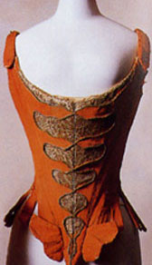
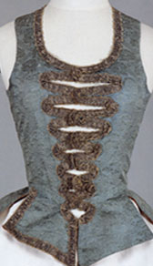
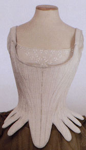
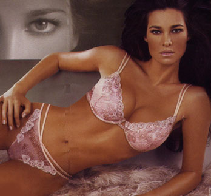
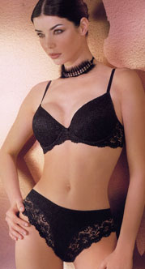

|
История
бюстгальтера
|
|||
 |
 |
История
нижнего белья вообще, а женского в частности, не менее захватывающая чем
история любой монархической династии. Историю этого ассортимента в том виде,
каким мы его знаем, можно отсчитывать с середины XVIII века. Все началось с корсета. Корсет лепил дамскую фигуру: сдавливал или приподнимал грудь, а также формировал талию в зависимости от веяний моды. С 1905 года начали шить платья свободного покроя, которые можно было носить без корсетов. Это стало стимулом для появление нового поколения белья. |
 |
|
Корсаж. Середина XVIII
века. Музей костюма Киото.
|
Корсаж. Середина XVIII века. Заподная Европа. | Корсет. Середина XVIII века. Россия. | |
 |
Бюстгальтер
изобретался неоднократно. В 1903 году женщина-врач
Саро предложила корсет, состоящий
из двух частей: бюстгальтера и грации. Новшество
возникло самым банальным путем: она разрезала корсет на две части. Отсюда
берет своё название современное нижнее бельё – корсетные изделия. Её изобретение
было принято с восторгом. Это позволило женщинам кататься на велосипеде
и заниматься спортом. Через десять лет американка Мэри Фелпс Джекобс вновь изобрела бюстгальтер. Это изобретение выглядело просто: пара носовых платочков, соединенных вместе. Штуковина называлась «бесспинный лифчик» и была тут же запатентована. Однако изделие спросом не пользовалось, пока муж Мери, служивший в фирме по производству корсетов, не предложил хозяевам новинку, которую они купили за …1,5 тысячи долларов. |
 |
| LORMAR. Каталог белья. | PALMETTA. Каталог белья. | |
|
Вопросы
для самопроверки
|
||
| 1.
Почему ассортимент современного нижнего белья получило название "корсетные
изделия"? 2. Что изобрела женщина-врач Саро? 3. Кто изобрел бюстгальтер и как он назывался? |
||